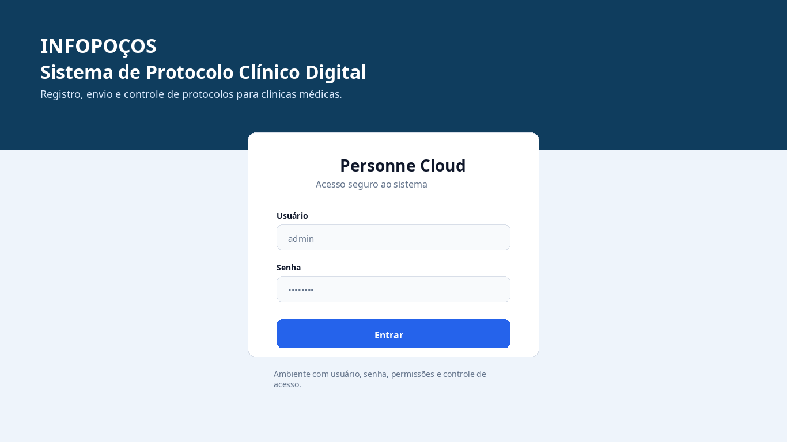
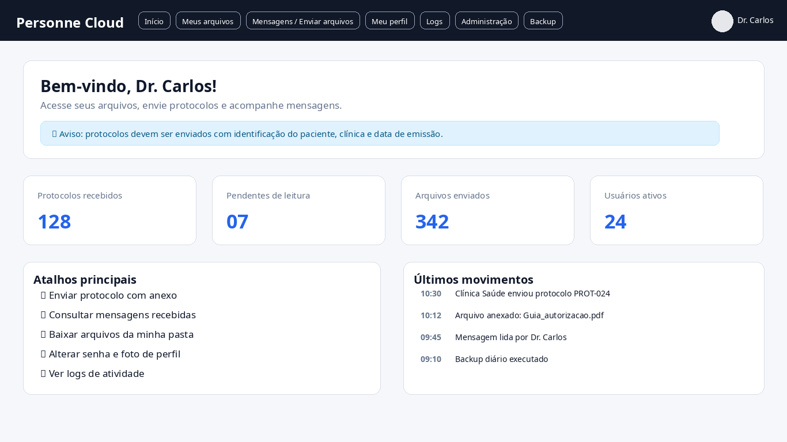
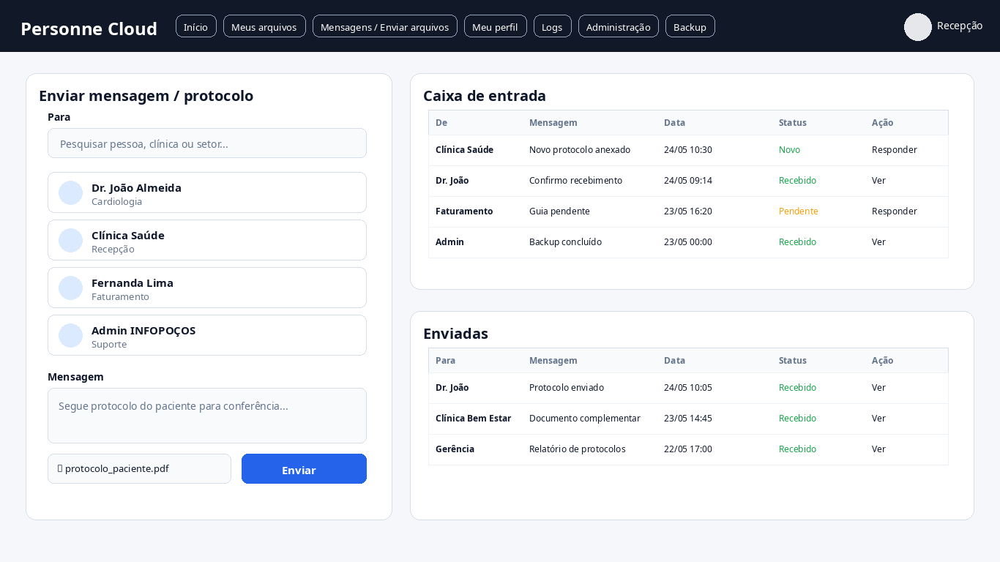
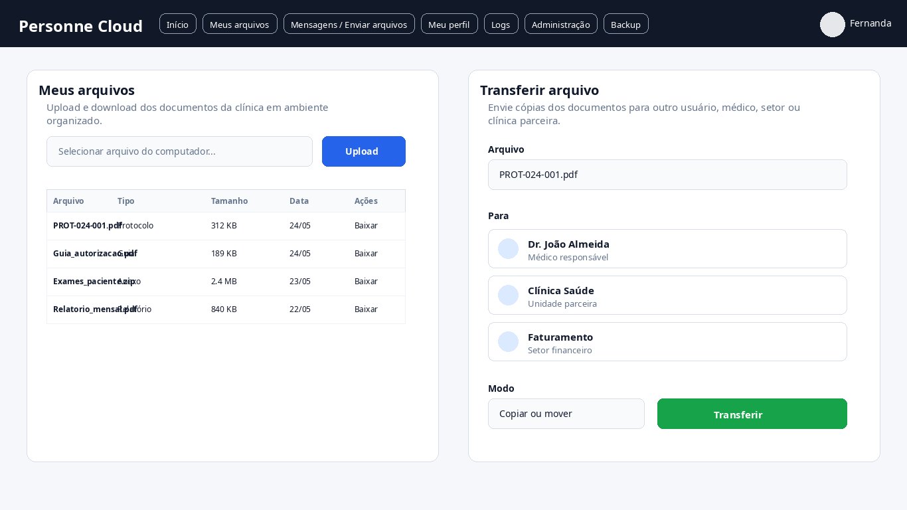
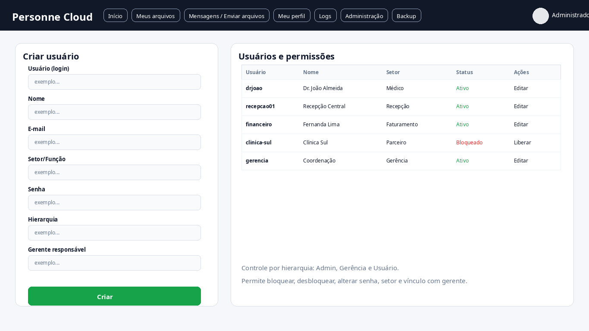
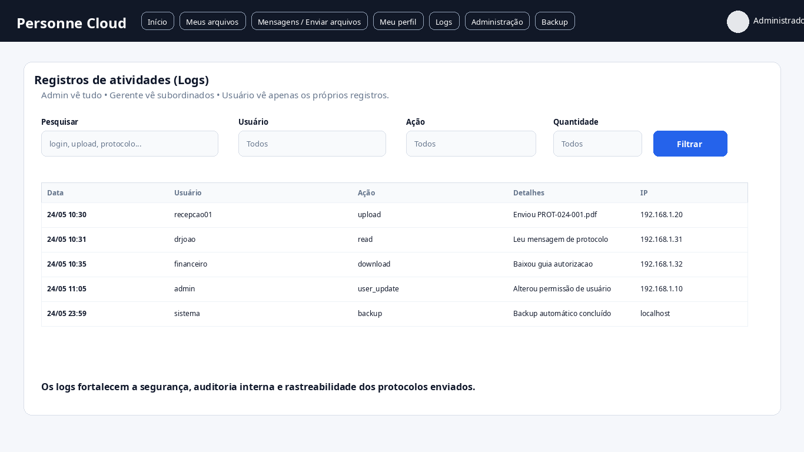
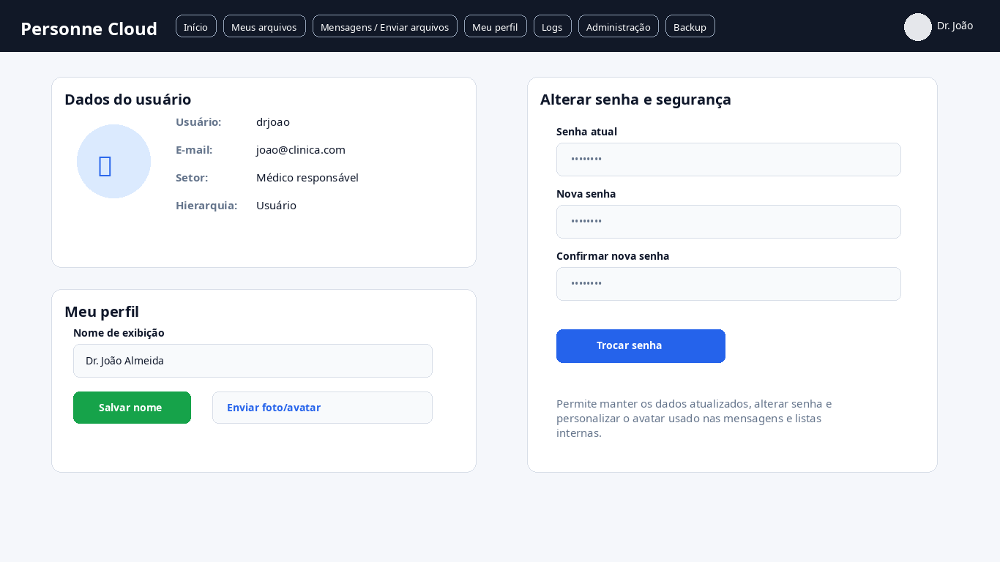
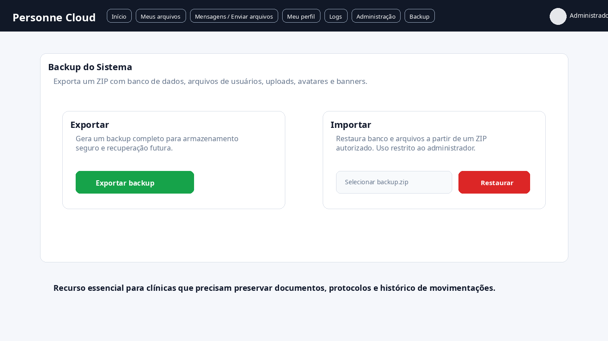
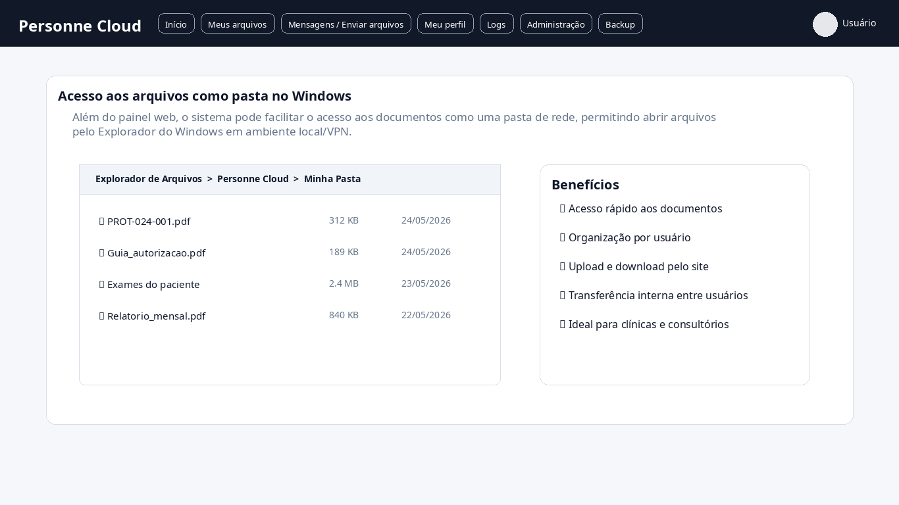
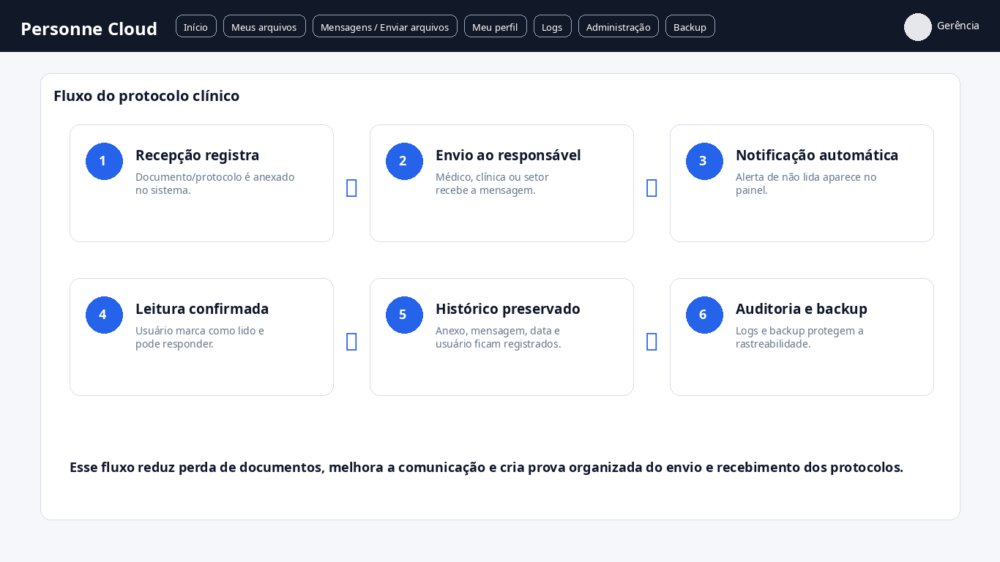

Plataforma desenvolvida para clínicas médicas organizarem protocolos, arquivos, mensagens internas, registros e controle de usuários de forma segura, prática e integrada.
O sistema foi desenvolvido para clínicas que precisam organizar protocolos, documentos, arquivos e comunicação interna.
A plataforma permite registrar o envio de protocolos, controlar usuários, acessar arquivos em nuvem, acompanhar históricos, registrar logs e manter toda a operação organizada em um único ambiente.
Tudo isso com foco em segurança, LGPD, controle de permissões e facilidade de uso.
Registro, organização e acompanhamento de protocolos enviados pela clínica.
Cada usuário possui login próprio, permissões específicas e acesso individualizado.
Sistema de mensagens internas e envio de arquivos entre usuários e setores.
Compartilhamento organizado de documentos e pastas com acesso controlado.
Controle de acesso, logs de ações, permissões e segurança dos dados.
Sistema preparado para backups automáticos e preservação das informações importantes.
A plataforma possui autenticação individual por usuário, permitindo controlar exatamente quem acessa cada setor, arquivo ou funcionalidade do sistema.

O painel principal centraliza informações importantes da clínica, protocolos recentes, notificações, usuários conectados, movimentações e atalhos rápidos.

O sistema permite enviar mensagens internas, compartilhar protocolos e registrar movimentações entre setores da clínica.
Isso reduz perda de informações e melhora a comunicação interna.

Usuários podem compartilhar arquivos, documentos e protocolos dentro do sistema, mantendo tudo organizado e centralizado.

O administrador consegue criar usuários, definir permissões, bloquear acessos, controlar setores e acompanhar atividades.

Todas as ações importantes podem ser registradas, permitindo auditoria, rastreabilidade e histórico de movimentações dentro do sistema.

Cada usuário possui perfil individual, podendo alterar senha, foto e informações pessoais.

O sistema possui recursos para backup automático, aumentando a segurança e proteção das informações.

O sistema pode trabalhar integrado ao ambiente Windows, facilitando acesso a pastas compartilhadas, arquivos e documentos da clínica.

A plataforma organiza todo o fluxo de envio, recebimento e acompanhamento dos protocolos, permitindo rastrear cada movimentação realizada.

Solicite uma demonstração e veja como a INFOPOÇOS pode adaptar esta solução para sua clínica médica.
Solicitar orçamento pelo WhatsApp